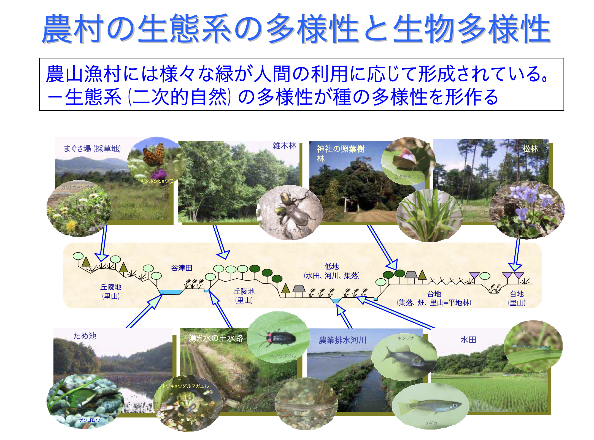
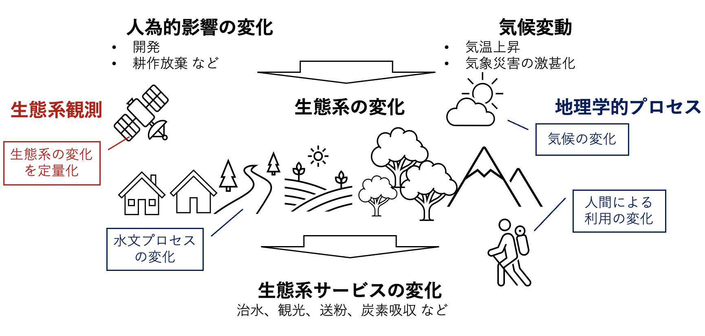
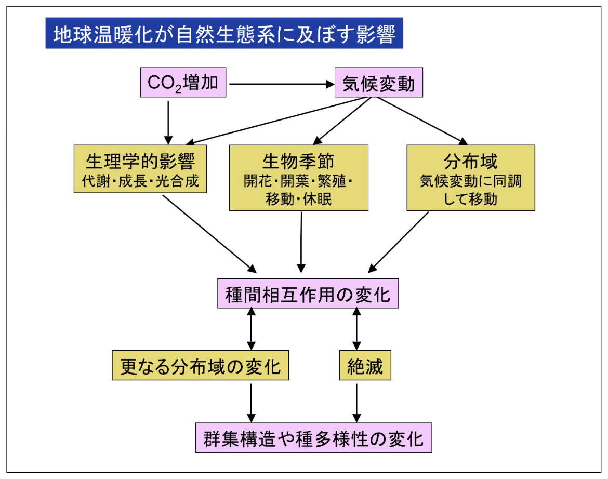
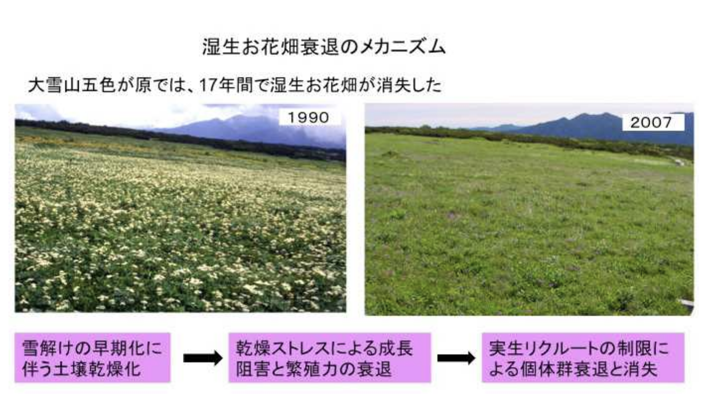

1 生態系観測の意義と地理学との接点
この講義では、主に生態系を定量的に観測する手法について紹介します。具体的な話題に入る前に、そもそもなぜ生態系を観測する必要があるのか、それが地理学とどのように関係しているのか、考えてみましょう。
1.1 生態系は変化している
現代ほど生態系の変化に注目が集まっている時代はないかもしれません。過度な開発などによる生態系の劣化や生物多様性の損失が、経済活動にとって極めて重要なリスクとなっています。例えば、世界経済フォーラムが2020年に発表した報告書（自然関連リスクの増大）では、世界の総GDPの半分以上が自然資本と生態系サービスに依存しており、喪失の危機にあると指摘されています。
そのため、企業は自社のサプライチェーンが生態系に与える影響を定量化し、その結果を財務状況として公開するべきだという考え方（TNFD、自然関連財務情報開示タスクフォース）が広がっています。さらに、深刻化する気候変動は既に自然生態系に大きな影響を与えており、その影響の定量的な把握と適応策の立案が急務となっています。
このようなマイナスの変化を受けて、生物多様性を回復させようとする動きも出てきました。日本も批准している生物多様性条約の締約国会議（COP15, 2022）では、生物多様性の損失を止め、回復に転じさせる（ネイチャーポジティブ）ための行動をとることが提言され、世界中で生態系を回復させるための取り組みが試行されています。


ネイチャーポジティブ実現に関する重要な概念として、30by30目標とOECM（Other Effective area-based Conservation Measures) があります（角谷 (2022) を参照）。30by30目標は昆明・モントリオール生物多様性枠組の中で設定された目標で、2030年までに陸域・海域の30%で効果的な生物多様性保全を実施しようというものです。しかし現状を見ると、例えば日本国内では、既存の保護地域（国立公園等）は陸域の20.5%、海域の13.3%に過ぎません。これから5年間で国立公園を大幅に拡大するのも難しいでしょう。
一方で、自然保護を目的として設定されたエリア以外にも、工場敷地内の緑地や市民公園、スキー場の草原や里山など、人が自然を利活用することで自然保護が実現されている場所もあります。こういった場所での生態系保全活動を推進することで、30by30目標達成を目指そうというのが、OECMの考え方です。日本では、こういった「保護区以外で生態系保全を実施している場所」を環境省が「自然共生サイト」として認定する動きも出てきています。
日本を含むアジアモンスーン地域における生物多様性保全においては、二次的自然の価値が特に高い、ということも日本におけるOECMの重要性を強調しています。植生は時間と共に遷移し、日本の多くの陸域ではブナやミズナラ、シラカシといった安定的な極相林になります。全ての土地が極相林になってしまうと、生物多様性は当然低くなります。したがって、陽樹林や草原、湿地などの多様な生態系が成立するためには、遷移を巻き戻す適度な撹乱（山火事、台風、河川氾濫など）が必要です。

日本では、頻繁な河川氾濫や山火事によって河畔草原や湿地が形成されてきました。しかし、人間社会の発展とともに、山火事や河川氾濫は次第に人為的にコントロールされるようになりました。では、湿原や草原に生息していた生物たちは消えてしまったのでしょうか。そうではありません。例えば湿原の生物たちは、湿原を改変して造成された水田に残ることができました。また人間は、薪や茅などの資材を得るために伐採や野焼き、草刈りを行うことで、雑木林や草原を維持してきました。意外に思われるかもしれませんが、日本では人間が適度に自然を利用することで、生態系に程よい撹乱が加えられ、結果として生物多様性が維持されてきたのです。

このように、現代では生態系の保全・再生に対する需要が増えつつあり、
- 開発や気候変動が生態系にどのような（マイナスの）変化をもたらしているか
- 回復に向けた取り組みがどの程度（プラスの）効果をもたらしているか
- 上記の様な生態系の変化によって、人間社会にどういったインパクトがあるか
を定量的に観測・予測することが必要とされているのです。
1.2 変化を駆動する地理学的なプロセス
生態系の変化や社会に対するインパクトには、さまざまな地理学的なプロセスが関係しています。たとえば、気候変動が生態系に与える影響を理解するためには、その場所の気象や水文に関する知識が不可欠です。さらに、都市開発や茅刈り文化の衰退、耕作放棄地の増加など、人間活動の変化が地域の生態系に対して負の影響を与えることもあります。都市や里山のような人間活動と密接に結びついた生態系を考える際には、社会と生態系を一つのシステム（社会ー生態システム）として考える必要があり、地域の文化やその地理学的な成立要因についての考察が必要です。生態系の変化が地域の経済や文化に対して与える影響の理解についても同様のことが言えるでしょう。この様な社会課題に対するアプローチについては9章で詳しく議論します。

以下では日本の高山生態系を題材として、もう少し具体的に、生態系の観測と地理学的な考察が必要とされそうな状況について考えてみましょう。
1.3 想定ケース1. 高山生態系への気候変動影響の把握と保全
厳しい環境に適応した特有の種が多く生息する高山帯は、生物多様性の保全上重要である一方、気候変動に対して極めて脆弱であることが知られています（Hock et al. (2019)）。実際に日本の高山生態系では、融雪の早期化や夏季の気温上昇によると考えられる植生の変化が観測されており、たとえば北海道の大雪山では急速に拡大しつつあるササ類が高山植生を駆逐していることが問題視されています（Kudo et al. (2011)）。現在は、気候変動シナリオをもとに、1 kmメッシュで高山植生の分布変化を予測する研究が行われていますが（Amagai, Oguma, and Ishihama (2022)）、今後は積雪や融雪、植物種間の競争や植生変化が土壌に対して与える影響といった、より詳細な地生態学的プロセスに基づく予測が求められます。

1.4 想定ケース2. 生態系の「回復」に向けた取り組みの設計と評価
上記で取り上げた高山帯におけるササの拡大（と高山植生の衰退）には、定期的なササ刈りが効果的であることが知られています（Kudo et al. (2017)）。しかし、ササ刈りは面積あたりの労力が大きい保全活動ですので、効果的な場所を選定する必要があります。ササ刈り適地を選定する方法はいくつか考えられると思いますが、たとえば近年ササが拡大した場所であれば、ササの下層に高山植生が残っている可能性が高く、回復が見込めるかもしれません。また、ササ刈りによる効果を追跡して定量的に測定することも重要です。生態系の定量的な観測データは、この様な保全・回復活動の計画や効果測定の基盤として重要です。さらにもう少し踏み込めば、ササ刈りによる生態系サービス（お花畑の復活による観光価値など）の回復予測を回復活動の計画に活用することもできそうです。たとえば Mameno et al. (2022) では、気候変動による高山植生の変化は登山者一人当たり10,000円程度の経済価値の損失をもたらすことが予測されています。高山帯の景観の中で観光資源としての寄与が大きい場所を特定できれば、生態系サービスの回復に効果的な施作を考えることができるでしょう。
